Battery Energy Storage Systems (BESS) are rapidly becoming indispensable to modern power grids — enabling frequency regulation, peak shaving, black start capability, and seamless renewable energy integration. Yet, despite booming demand, a significant number of Engineering, Procurement, and Construction (EPC) firms consistently fail to deliver these projects on time, within budget, and to specification. The root causes are not random — they are systemic, repeatable, and in most cases, entirely avoidable.
Research by the Electric Power Research Institute (EPRI) reveals that 36% of all BESS failures originate during the integration, assembly, and construction phase — making EPC execution the single largest failure category, ahead of operational issues (29%), design problems (21%), and manufacturing defects (4%). A critical insight from global failure data further confirms that 72% of BESS failures occur during construction, commissioning, or within the first two years of operation — a window entirely within EPC control.

Understanding why EPCs fail at BESS is no longer a niche concern. As India's BESS market grows alongside the global push toward grid-scale storage, the consequences of EPC failure cascade into delayed commercial operation dates (COD), cost overruns, safety incidents, grid compliance rejections, and damaged stakeholder trust.
1. Treating BESS Like a Solar or Conventional Power Plant
One of the most fundamental and costly mistakes EPCs make is approaching BESS projects with the same playbook used for solar PV or conventional generation. Building a solar array is not the same as constructing a BESS facility. Energy storage projects demand a unique blend of electrical, mechanical, thermal, and software engineering — all deeply interrelated.
Solar EPCs routinely win BESS contracts based on their renewable energy credentials but then apply solar-era assumptions to battery storage. The result is systematic underestimation of complexity in areas like Battery Management System (BMS) integration, thermal design, DC protection coordination, and energy management software. This knowledge gap translates directly into design flaws, rework, and schedule overruns.
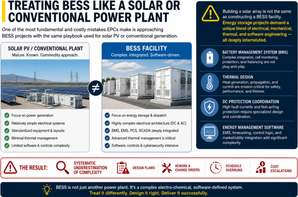
The India-specific dimension: In India's tropical climate — with extreme heat, monsoon humidity, and wide ambient temperature swings — BESS thermal design is non-negotiable. Projects in coastal or high-rainfall zones face moisture ingress risks that a solar-centric EPC is simply not trained to anticipate. EPCs must engineer for ambient conditions specific to each site, including derating plans and redundant ventilation systems.
2. Failure to Pretest and Validate Technology
A pervasive cause of commissioning delays is the failure to pretest and validate all system components before site deployment. BESS systems typically integrate equipment from 5 to 10 or more vendors — battery modules, power conversion systems (PCS/inverters), BMS, EMS, HVAC, fire suppression, and DC/AC wiring — each following its own specifications and interfaces.
Without pre-deployment validation, incompatibilities between these components emerge only during commissioning, causing cascading delays. Inverter firmware mismatches, BMS communication protocol failures, and protection relay coordination errors are common examples that surface too late. The Australian Victoria Big Battery (2021) is a cautionary global case: a coolant system leak during commissioning, undetected due to inadequate assembly inspection and end-of-line testing, triggered a fire that spread across multiple BESS units.
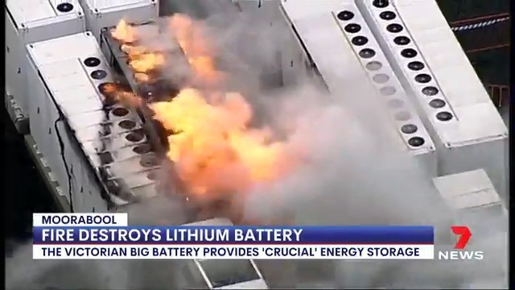
The solution is pre-integration testing: Every critical component — from inverter settings to BMS parameters — must be validated in a controlled environment before being shipped to site. EPCs that establish dedicated integration and test facilities catch compatibility failures early, preserving both the schedule and the Commercial Operation Date (COD).
3. Underestimating Software Design and Integration
BESS is fundamentally a software-driven system. The Energy Management System (EMS), BMS, SCADA, and control algorithms are not bolt-on afterthoughts — they are the brain of the entire installation. Yet many EPCs treat software as a final commissioning task rather than a core engineering deliverable.
Underinvestment in software integration leads to:
- EMS-to-BMS communication failures causing incorrect charge/discharge commands
- PCS-to-grid interface misconfigurations resulting in reactive power deviations
- EMS incompatibility with gensets or PV inverters in hybrid configurations
- Inadequate SCADA alarm hierarchies that mask early-warning faults
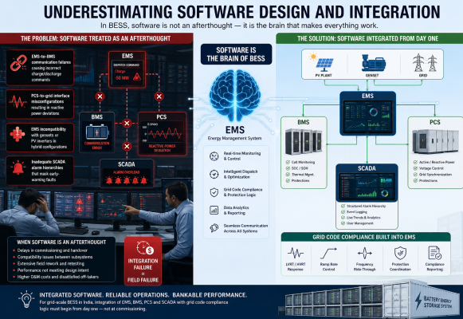
When software integration is treated as an afterthought, the result is delays, compatibility issues, and costly field rework. For grid-scale BESS in India, the EMS must also handle grid code compliance logic — including LVRT/HVRT responses, ramp rate controls, and frequency ride-through — which require deep coordination between hardware and software from day one.
4. Sub-Standard Integration, Assembly, and Construction
According to EPRI's global BESS Failure Incident Database, faulty integration, assembly, and construction is the single leading cause of BESS failures, accounting for 36% of all incidents. The majority of these failures involve Balance of System (BOS) components — DC and AC wiring, HVAC subsystems, and safety elements like fire suppression systems.
The core problem: lithium-ion BESS units contain components from multiple suppliers, which are not necessarily designed to work together. Without rigorous integration discipline — including systematic interface verification, torque checks, coolant pressure testing, and end-of-line functional testing — incompatibilities compound silently until they produce failures at the worst possible moment: during commissioning or early operation.
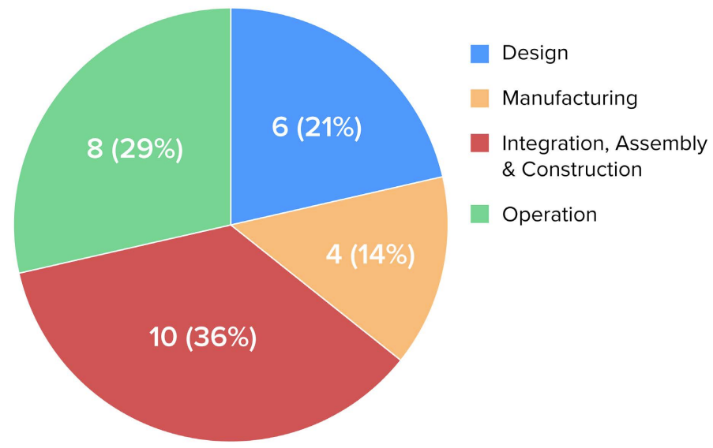
Common assembly-phase failures include:
- Improper torque on busbars and cell terminals causing resistance hot spots
- Coolant system leaks in thermal management loops going uninspected
- Fire suppression system misconfigurations that fail during thermal runaway events
- DC wiring errors producing ground faults or arc flash hazards
- HVAC subsystem installation errors leading to inadequate battery cooling
5. Just-in-Time Procurement and Supply Chain Mismanagement
The reliance on just-in-time (JIT) manufacturing and procurement is a structural vulnerability in BESS EPC projects. Unlike construction materials that can be sourced locally, BESS-critical components — DC blocks, high-voltage transformers, switchgear, battery modules — have long lead times and limited global suppliers.
Global supply chain disruptions — amplified by geopolitical tensions and post-pandemic logistics volatility — have caused shortages of essential components, resulting in construction halts and cost overruns. Beyond delivery risk, JIT procurement introduces a state-of-degradation risk for DC blocks and battery modules: equipment stored improperly or for extended durations before installation may arrive with degraded state-of-charge, capacity loss, or compromised cell chemistry.
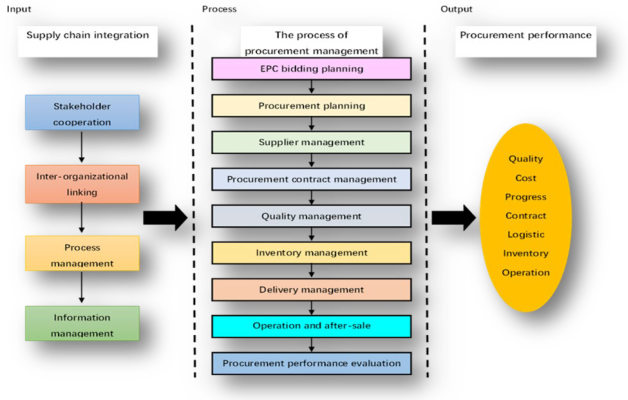
Studies show that over 65% of EPC schedule overruns originate from supply chain mismanagement, and the average cost of a single month's delay in a large power project can exceed $20 million. For BESS projects specifically, OEM battery suppliers hold significant market power in a demand-heavy environment, often imposing non-standard warranty terms and limited liquidated damages exposure — leaving EPCs with thin contractual protection when deliveries slip.
Strategic procurement discipline — including diversified supplier relationships, buffer inventory strategies, and equipment storage protocols — is essential to protect project timelines and power density targets.
6. Commissioning as an Afterthought
Many EPC firms treat commissioning as the final checkbox rather than a planned, phased engineering activity. This mindset guarantees problems. Commissioning in BESS projects is exceptionally complex — it involves loop checks, BMS parameter validation, protection relay testing, grid synchronization trials, performance capacity tests, and sequential energization of high-voltage DC and AC systems.
When commissioning is not planned proactively, bottlenecks discovered late compound one another: a relay coordination issue delays energization, which delays capacity testing, which delays the grid operator's acceptance tests, which delays COD. Research indicates that 46% of BESS projects face commissioning delays of three months or longer, representing significant liquidated damages exposure for EPC contractors.
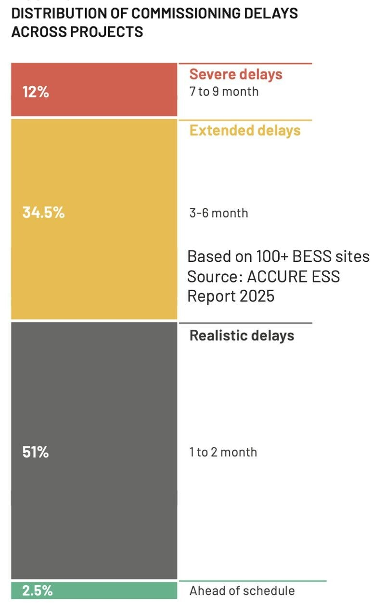
The absence of a digital commissioning framework — with pre-defined test protocols, automated logging, and independent verification — means defects are often discovered reactively, not proactively. Independent commissioning engineers and third-party performance validation should be standard, not optional.
7. Grid Code Compliance Blindspots
Grid code compliance has emerged as a technical gatekeeper for BESS projects, yet many EPCs treat it as a documentation exercise rather than an engineering constraint that must be embedded from the design stage. In India, the Central Electricity Authority's 2023 amendment mandates that all BESS projects undergo detailed simulations — using tools like PSSE and PSCAD — to demonstrate compliance with grid behavior at the Point of Interconnection (POI).
Required compliance studies include Low Voltage Ride-Through (LVRT), High Voltage Ride-Through (HVRT), frequency ride-through across 47.5 Hz to 52 Hz, reactive power capability assessment, and ramp rate compliance. EPCs that fail to embed these requirements into the BMS/EMS control architecture during engineering — rather than attempting retroactive tuning during commissioning — face rejected connection requests, expensive redesigns, and revenue loss from delayed grid synchronization.
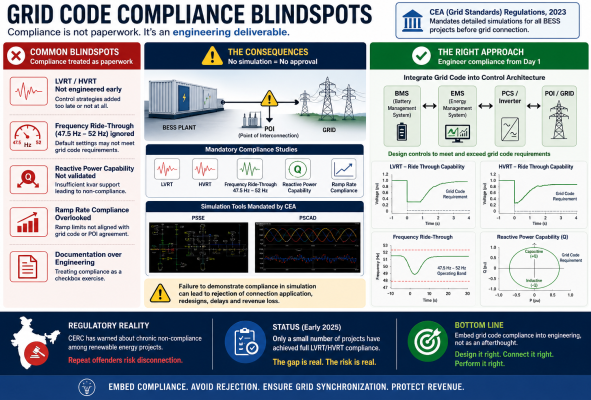
India's grid regulator (CERC) has already issued warnings about chronic non-compliance among renewable energy projects, cautioning that repeat offenders risk disconnection. As of early 2025, only a small number of projects had achieved full LVRT/HVRT compliance, underscoring how widespread the gap remains.
8. Inadequate Thermal Management Design
Poor thermal management is one of the most dangerous and most preventable BESS failure modes, yet EPCs with limited battery-specific experience routinely underprioritize it. Inadequate airflow design, incorrect thermal insulation specifications, or improperly sized cooling systems cause cell temperatures to exceed safe operating windows, initiating thermal runaway — a self-propagating exothermic reaction in which a failing cell triggers adjacent cells, potentially resulting in fires or explosions.
Proper BESS thermal design requires Computational Fluid Dynamics (CFD) analysis, real-time temperature monitoring at the cell and module level, redundant cooling loops, and ambient derating curves matched to the project site. In India, this means designing for 45–50°C ambient summer conditions as a baseline, not as an edge case.
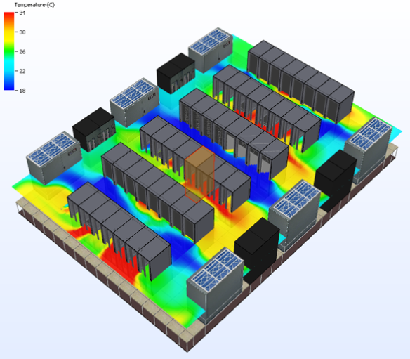
Compounding the risk, many EPC projects skip DC incident energy (arc flash) assessments, performing arc flash analysis only for the AC system while leaving DC-side maintenance teams exposed to unknown hazards. This omission violates safety best practices and creates liability for both the EPC and the asset owner.
9. Inexperienced Project Management and Organizational Risk
Large-scale BESS projects demand cross-disciplinary project management that spans electrical engineering, civil construction, procurement logistics, regulatory compliance, OEM coordination, and commissioning sequencing simultaneously. Many EPC firms — particularly those transitioning from solar or civil infrastructure backgrounds — lack this specialized competency.
Inexperienced project management leads to execution failures including poor interface management between civil, electrical, and controls teams; inadequate schedule float for known BESS-specific risks; failure to track OEM milestone-based payment structures; and inability to manage multi-vendor warranty and liability boundaries.
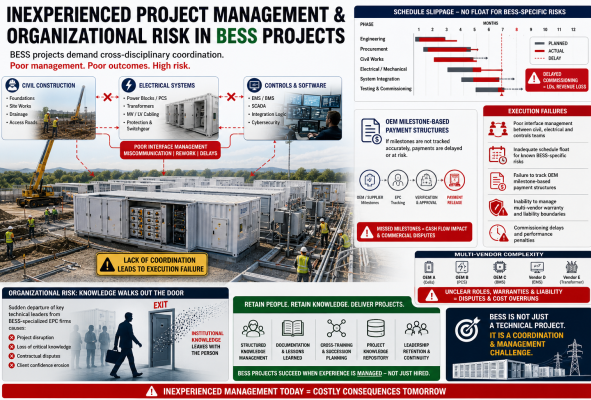
Organizational risk compounds the problem: the sudden departure of key technical leaders from BESS-specialized EPC firms has caused project disruption and contractual disputes, as institutional knowledge walks out the door mid-execution. BESS project managers must be retained through structured knowledge management, not just headcount.
10. Uneconomic Bidding and Cost-Cutting Pressure
A systemic root cause that enables many of the technical failures described above is price-competitive bidding that does not reflect true project costs. When EPCs bid BESS contracts at uneconomic rates to win work, the resulting budget constraints force corner-cutting in precisely the areas where BESS projects are most failure-prone: assembly quality, procurement oversight, pretesting, commissioning rigor, and experienced staffing.
The consequences are predictable: projects bid at thin margins lack funds for independent commissioning engineers, proper component storage facilities, extended pretesting cycles, or specialized grid compliance consultants. The short-term gain of winning a contract becomes a long-term liability through schedule penalties, rework costs, safety incidents, and reputational damage.
This race-to-the-bottom dynamic is particularly visible in India's emerging BESS procurement market, where competitive tender structures and lowest-cost L1 selection criteria create strong downward pricing pressure. Disciplined cost modeling that accounts for BESS-specific execution risks — not solar-analogous benchmarks — is essential for sustainable project delivery.
Failure Distribution: BESS Project Phases at Risk
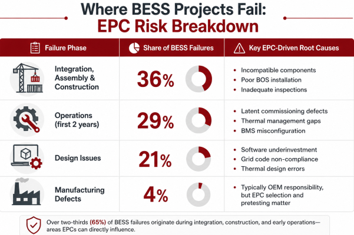
72% of all BESS failures occur during construction, commissioning, or within the first two years of operation — a window entirely within EPC accountability.
What Best-in-Class EPC Execution Looks Like
The inverse of each failure mode reveals the practices that separate successful BESS EPCs from struggling ones:
- Pre-integration testing of all components at a dedicated test facility before site deployment
- Commissioning as a forethought — phased test protocols developed during engineering, not improvised on-site
- Software-first engineering — EMS, BMS, and protection logic developed and validated in parallel with hardware
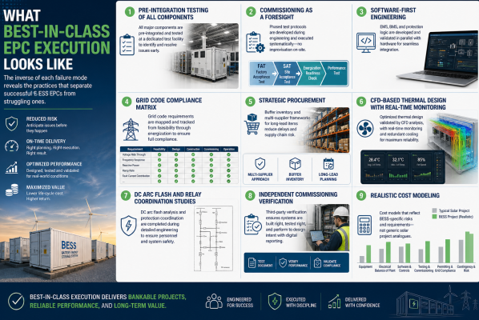
- Grid code compliance matrix embedded from feasibility stage through energization
- Strategic procurement with buffer inventory and multi-supplier frameworks for long-lead items
- CFD-based thermal design with real-time monitoring and redundant cooling
- DC arc flash and relay coordination studies completed during detailed engineering
- Independent commissioning verification with digital reporting and performance validation
- Realistic cost modeling that accounts for BESS-specific risks, not solar project analogues
Conclusion
EPC failure in BESS projects is not a question of bad luck — it is a predictable outcome when firms apply conventional construction mindsets to an inherently complex, multi-disciplinary, software-intensive technology. The data is unambiguous: most failures happen during phases entirely under EPC control, most root causes are systemic and repeatable, and most can be prevented with appropriate expertise, planning discipline, and investment in quality.
As India's BESS pipeline accelerates — driven by the government's storage mandates, renewable integration targets, and the need for grid stability — the cost of EPC failure will only grow. Developers, financiers, and grid operators are increasingly demanding proof of BESS-specific execution capability before awarding contracts. EPCs that recognize and address these failure modes now will define the standard of excellence in India's energy storage buildout.